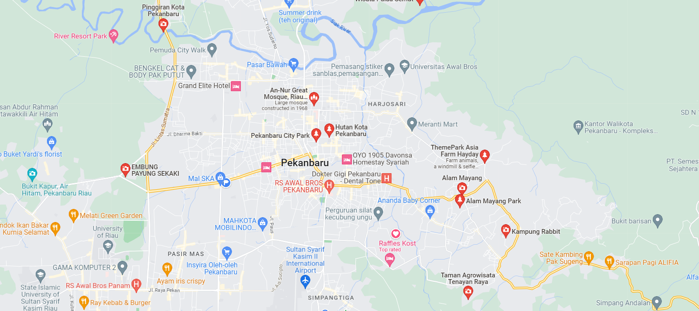

Top Destination di Pekanbaru!
Masjid Agung An-Nur adalah salah satu masjid terbesar di Pekanbaru, Riau. Dibangun pada tahun 1963, masjid ini menjadi ikon kota dan merupakan tempat ibadah yang penting bagi penduduk setempat.

Candi Muara Takus adalah salah satu situs bersejarah di Pekanbaru, Riau. Candi ini berasal dari abad ke-13 dan merupakan peninggalan Kerajaan Siak Sri Indrapura.
Istana Siak adalah istana bersejarah yang menjadi bagian dari warisan budaya Siak Sri Indrapura, Riau. Istana ini dibangun pada abad ke-19 oleh Sultan Siak dan menjadi simbol kebesaran kerajaan tersebut.
Cari Destinasi Wisata di Sekitarmu!
Pekanbaru kaya akan wisata, jadikan petualanganmu tak terlupakan!
pku.
Saya, Pemandu Wisata Terbaik, Akan Mengajak Kalian untuk Menjelajahi Keindahan Pekanbaru!